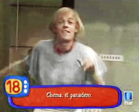
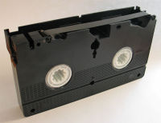
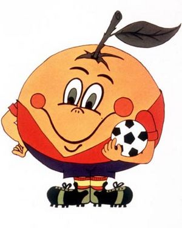

Ochentero
 De: La Frikipedia, la enciclopedia extremadamente seria.
De: La Frikipedia, la enciclopedia extremadamente seria.
| De la serie tribus urbanas del mundo:
|
| Ochentero
|
Ejemplo de la tribu

|
| Chema el panadero ilustra bien las metamorfosis de un ochentero: miembro de un conjunto musical, actor en programas infantiles y fundador de una compañía de teatro alternativo
|
|
| Hábitat
|
Parques temáticos, oficinas, locales de ocio nocturno, redes sociales... En todas partes, vaya
|
| Inteligencia
|
Como mínimo se le reconoce una capacidad de evocación ilimitada
|
| Frase favorita
|
En los ochenta...
|
| ¿Peligroso?
|
Únicamente cuando va en manada y con unas copas de más
|
| Obsesión
|
Digitalizarlo todo
|
| Notas
|
A evitar en fiestas y homenajes de todo tipo
|
Persona que valora exageradamente todo lo que pasó entre 1980 y 1990, ya sea estilos de vida, opiniones, cultura, acontecimientos, música, literatura, ocio, cine, tecnología o modas. Por lo general se denomina así a la persona que presume de haber vivido todo eso.
Un ochentero puede tener cualquier edad, pero el ochentero auténtico es el que nació entre 1960 y 1970 (si no ha nacido entre esos años es un fan sobrevenido que, por alguna extraña razón, no tiene interés por la época que le ha tocado vivir), y que se denomina a sí mismo pureta ochentero. Cree que así demuestra capacidad de autocrítica, pero en realidad ignora que los más jóvenes le llaman pureta ya no se lleva, eso es de los ochenta.
Autotest del ochentero. Conoce tu nivel de ochenterismo
- ¿Todavía usas palabras o expresiones como pureta, guay, cutre, al loro como si estuvieran de moda? Eres un ochentero que no ha alcanzado el nivel mínimo de autoconciencia. Necesitas que te demuestren lo desfasado que estás. La compañía de otros ochenteros más experimentados puede ayudarte a comprender lo que te estás perdiendo.
- ¿No te cansas de ver el anuncio de la Coca-Cola «Generación 80» y cada cosa que dicen repites un entusiasmado «¡¡sííí!!»? Empiezas a ser consciente de tu pertenencia a la generación ochentera, pero todavía estás lastrado por la nostalgia. Te falta adquirir orgullo de pertenencia.
- ¿Sabías que pureta, guay, cutre, están aceptadas por el diccionario de la RAE? Si lo sabes es porque lo has mirado. Has alcanzado el nivel máximo de ochenterismo. Puedes dar conferencias en universidades y organizar fiestas temáticas sin sentir vergüenza. Enhorabuena.
- ¿Consideras que el título de este texto debería ser Ochentero/a por motivos de corrección política? Una de dos: o has nacido después de 1970 o has perdido de vista lo que significa ser ochentero. Si la gramática no es suficiente para ti ¿qué lo será?
Especies ochenteras
- El ochentero tiene un sentido de pertenencia generacional extremadamente desarrollado. Para él todo lo de los ochenta tiene un significado generacional; pero finge que es algo que le ha marcado a su pesar, como si quisiera restar importancia al hecho de haber sido testigo de una serie de cosas tan cruciales que los demás se han perdido. En realidad está orgulloso de ser un ochentero, pero no lo admite abiertamente para no ofender a los demás, que no tienen una generación tan guay a la que pertenecer, los pobres. El uso de la palabra guay, por cierto, es una de las expresiones pasadas de moda que permiten detectar a un ochentero en cualquier conversación.
- El ochentero ultraortodoxo, por su parte, es la elite de los ochenteros. A estos no les basta con reafirmarse frente a los no-ochenteros, sino que necesitan marcar distancias con sus iguales, y por eso presumen de gustos (especialmente en música) setenteros, demostrando así que están un paso por delante. Para ellos los buenos, los auténticos no son los grupos y solistas comerciales que adoraban los ochenteros-de-base, sino Cirque du Soleil y abonos de ópera; es su forma de demostrar que en realidad ellos no son unos ochenteros cualquiera, tan solo amantes de la buena cultura. En realidad, los ochenteros ultraortodoxos eran los raros de los ochenta que no soltaban prenda sobre sus gustos, y cuando lo hacían nadie les entendía.
- El ochentero heavy o jebi mejor dicho, personaje extremadamente macarra y que cultiva un gusto por la ropa hortera, totalmente ajustada, el cuero y el pelo cardado. Solo respeta y admira el metal ochentero y desprecia todos los géneros y tendencias metaleras de hoy en día tachandolas de mierda para frikis posers. En esta especie radica el glam metalero/hard rockero americanado, fanatico de Poison, Y&T, Vinnie Vincent, Giuffria y sus dioses Motley Crue, entre otras bandas. Pero también hay otras sub-especies maníacas de otros géneros de esa época como el heavy metal a secas, el speed metal, el thrash metal, etc... pero alto, no solo escuchan bandas de los 80, también escuchan bandas de hoy en día que poseen el sonido ochentero y atienden a la antigua actitud que consideran la verdadera identidad de todo metalero; ser un macarra, ir en moto, ligar con todas, usar navajas automáticas y pillar pedos de la ostia. En los 90 esta especie empezó a disminuir pero últimamente aparecen numerosos seguidores del metalerismo ochentero ya que son muchos los que están asta las pelotas del metal sinfónico y el power pop metal que se aleja años luz de lo que ellos consideran el autentico power metal. Pasan de la tendencia rolera de los noventa y se cagan en Nightwish... lo que quieren es estar escuchando Saxon en una playa paradisíaca con alcohol y tías (o tíos) buenorras en pelotas. Si te cruzas con uno de ellos y te intenta atracar lanza al aire un frasco de laca y se ira corriendo a por el (a no ser que sea maníaco de el thrash, el speed u otro genero mas agresivo, entonces no tendrás escapatoria y morirás a cadenazos si no te mata antes el olor de sus sobacos)
- El ochentero está encantado de que su juventud transcurriera en los ochenta. Está convencido de que su generación reúne mejores virtudes que las de sus antepasados Hippies y progres; mientras que los que vienen detrás son una degeneración de lo que ellos pusieron de moda. Los sesenteros eran unos greñudos trasnochados. Los setenteros unos greñudos aparentemente comprometidos políticamente que en realidad buscaban sexo a base de aturdir a las mujeres con soporíferos discursos de madrugada en bares cutres. A los noventeros los consideran unos malos imitadores, una generación a la que le han tocado todos los mitos ochenteros en declive (especialmente en cuanto a grupos musicales). Los noventa son un intento inútil de prolongar el esplendor ochentero cuando todo estaba acabado (en realidad los ochenteros no tenían el cuerpo para muchas juergas o empezaban a casarse y no se enteraban de las nuevas tendencias). Por si fuera poco, las parejas sentimentales de los ochenteros suelen ser noventeras, lo cual es fuente de largas, inútiles e interminables comparaciones generacionales. Por último, la juventud del nuevo milenio les parece una panda de despistados que no valoran lo que los ochenteros han conseguido para ellos (ocio, festivales, modas), lo cual les parece incomprensible o simples ganas de fastidiar.
- El ochentero disfruta hoy, por edad, de su nivel máximo de mitificación. Su generación ocupa los puestos clave en cualquier ámbito social de influencia, aunque para conseguirlo no ha tenido que hacer nada, simplemente envejecer. Los famosos ochenteros que marcaron tendencia en su momento ahora son admirados e imitados, mientras que los que no triunfaron son los auténticos que no se vendieron al mercado. Nada de los ochenta se desperdicia. A todo el que quiera escucharle el ochentero le vende el relato de su juventud (de la cual está enamorado): un tiempo de descubrimientos y conquistas, de inigualada felicidad sin cortapisas, llena de lo mejorcito de la cultura popular, especialmente de la música y las series de televisión, que ahora compra y descarga (eso prolonga su juventud) en un recopilatorio tras otro. Enumera sin descanso los mitos del pop/rock que ahora cobran 90 napos por concierto y que tuvo oportunidad de ver en directo, cuando no estaban acabados. Pero lo más importante es que cuando tenían 20 años ya eran conscientes de todas esas cosas. En realidad, fueron a aquellos conciertos porque un ochentero ultraortodoxo (que sí sabía de qué iba todo aquello) les convenció y porque aquella chica que le gustaba también iría. Y encima (esto no lo admitirá nunca en voz alta, a no ser con un punto de autoironía protectora) en las lentas levantó el mechero encendido mientras abrazaba a la que desde ese día se convirtió en su novia.
Declive
Hasta que llegó el sida y el ochentero se convirtió de la noche a la mañana en defensor a ultranza de la monogamia, la fidelidad y la responsabilidad. Sin que nadie diera por oficialmente finalizada la diversión, entraron por la puerta compromisos emocionales, hijos, viajes organizados, segundas residencias, segundas hipotecas, segundas parejas... Una mañana, a mediados de los noventa, el ochentero se levantó y se dio cuenta de que se había convertido en sus padres, y desde entonces repite orgulloso sus mismas ideas sobre la educación y la tradición, las mismas contra las que había construido su identidad «rebelde». En política, al ochentero le tocó vivir la revolución neocon de Ronald Reagan y Tatcher, los amos del universo, la desregularización de la economía, los bonos basura, el crecimiento ilimitado, la abundancia... Nada de todo esto preocupó nunca al ochentero, hasta que le hicieron un contrato fijo. Desde entonces, trata desesperadamente de compatibilizar sus borrosas convicciones progres con el bienestar económico al que aspira. La ideología del ochentero es confusa y difícil de calar: se pierde en terceras vías políticas que no se sabe qué son ni se decantan por nada. El ochentero trampea la coyuntura con lo primero que tiene a mano.
Los mitos
 La cinta VHS. El ochentero la llenaba de videoclips grabados de la TV sin pausa y sin criterio.
El ochentero ha decretado que la suya es la única generación a caballo entre lo analógico y lo digital que ha conocido lo mejor de ambos mundos: aprovechando lo que valía la pena del primero y aplicándolo a las novedades tecnológicas del segundo. El ochentero es un converso de la tecnología, porque para él es como el maquillaje que le permite contemplarse siempre joven, siempre al día. Por esa razón, el ochentero es un chollo como consumidor: ha cambiado los vinilos por VHS por DVD (alguno las volvió a comprar). Ha cambiado la tele de tubo por una de pantalla plana con TDT de alta definición y sopotocientas pulgadas para que sus hijos vean el Disney Channel. Ha cambiado la cámara de fotos automática que le regalaron para el viaje de bodas por una digital de 8.4 megapíxeles para documentar la infancia de su primogénito, superando el nivel de detalle de la serie 24. Tiene un iPod donde ha digitalizado sus CD de los ochenta pero no ha comprado ninguna canción en iTunes (eso sí, habla muy bien de Apple, porque es el Armani de la informática). Está escaneando sus fotos en papel (guardadas en otra caja junto a los vinilos) y está embarcado en un proyecto de digitalización de los vídeos familiares y musicales que grabó de la televisión con el digitalizador que regalaban con los cupones de un diario gratuito. Esta labor le llevará más tiempo que la construcción de la pirámide de Keops, pero el ochentero no dejará de comentarlo orgulloso con otros ochenteros, enseñando el único video que ha convertido. Todavía no está terminado porque tiene que retocarlo y añadirle ocho pistas de sonido y unos créditos como dios manda. En realidad no está muy seguro de cómo se hace y espera a que sus sobrinos crezcan para pedirles que lo hagan ellos.
Las claves
 Esto es lo que daba de sí el diseño gráfico en los 80.
El ochentero lo tiene muy claro a la hora de establecer lo mejor de cada categoría, porque el premio siempre es para algo o alguien de los ochenta:
- Canción: Don't you (forget about me) de Simple Minds, el himno no declarado de los ochenteros.
- Grupo: The Police. Insuperables. Inigualados. Y de propina establece el grupo que les relevó en los noventa: Depeche Mode (porque es el favorito de su pareja).
- Película: Star Wars. No se estrenó en los ochenta pero ellos la fueron a ver cuando eran adolescentes. Es un recuerdo ideal para exhibir en toda ocasión.
- Libro: Peter Jackson les da la oportunidad de hacerse los entendidos sobre la adaptación: lo descartado, sus pasajes favoritos y esas cosas...
Los Cobi.
La moda
La pata de elefante) y un número indeterminado de camisas y camisetas. Lo de ir conjuntado lo dejaban a criterio de sus novias de más de 1 año de antigüedad. Con los contratos fijos pasaron sin demasiados traumas a la corbata y al traje (con las mangas subidas hasta el codo en las fiestas, en plan Wham o Miami vice, según tendencias y orientaciones). Ahora se les reconoce por haber hecho de su ropa ochentera (de marca) el uniforme oficial para los fines de semana. La principal diferencia es que ahora las camisas van por fuera del pantalón, para disimular los michelines. Respecto a la moda femenina, el ochentero tiene muy claras sus preferencias: tejanos gastados y ajustados, camiseta blanca ajustada y deportivas blancas no demasiado sucias. Por eso adoraron a las Bangles y a Katrina (la de los Waves) y ahora las han cambiado por Katy Perry. Opinan que la ropa ajustada les ha perjudicado al no estar de moda en los ochenta (habrían ligado mucho más), aunque ahora no sabrían prescindir de ella (especialmente cuando la ven puesta en veinteañeras).
Sin embargo, la ropa que gastaban sus hermanas, amigas y novias era muy diferente: blusones enormes (ideales para disimular un pecho excesivo; entonces una condena, ahora una bendición) que no transparentaran (salvo contadas excepciones). Minifaldas con volantes, cintas en el pelo (se llevaban mucho en las fiestas), sombras de ojos verdes, incluso calentadores rosa sobre tejanos de colores. Las ochenteras llevan tatuado en su genoma dos mandamientos básicos sobre moda:
- La ropa interior debe ir conjuntada (es un sacrilegio ponerse bragas blancas con un sujetador negro o viceversa) y la tira del sujetador no debe asomar entre la ropa (por eso compraron aquellos de plástico transparente, de corta vida, nula eficacia y completamente gazmoños).
- Procurar que zapatos y bolso vayan a juego.
Todas las tendencias de moda urbana posteriores se han construido en contra de estos dos principios. Pero lo que de verdad define a una ochentera es su odio declarado a las hombreras: todas las llevaron en un momento u otro (incluso bajo la tira del sujetador) y hoy reniegan de ellas. Harán falta 10 años más para que vuelvan a ponerse de moda.
El ochentero y el ocio nocturno
El ochentero brilla como nunca en el ocio nocturno, porque su generación es la que ha vivido la mejor época del ocio nocturno que nunca haya habido. Si sale exclusivamente con otros ochenteros van a los pocos locales que quedan de su época, porque allí se encuentran a gusto. Aunque la decoración y la música ya no es la misma, pueden recrearse en sus batallitas y recuerdos del paraíso perdido. Cuando un ochentero (conversando con otros ochenteros) dice: "¿te acuerdas de Un globo, dos, globos, tres globos?" es mejor que los no-ochenteros activen el salvapantallas facial protegido con contraseña, porque eso significa que se ha puesto en marcha el dispositivo evocador-sin-pausa de: series de TV (en blanco y negro sobre todo), películas de la adolescencia, sobeteos con las chicas del colegio de enfrente (enseñanza segregada, otro obstáculo que supieron superar) en los cines de sesión continua y programa doble (realmente los echa de menos), fines de semana en las segundas residencias de los padres, excesos etílicos y narcóticos (siempre controlando, no como los pardillos de ahora) y, sobre todo, de la movida madrileña y su explosión creativa, de cómo entonces se llevaba ser un tiradete y bla, bla, bla... Cuando empiecen a preguntar sobre tal o cual chica que nunca le hizo caso, si se casó, si se divorció, si la has visto, si estaba buena, si estuvo a punto de... significará que la tormenta ha pasado y es posible salir de la hibernación mental sin temor a quedar sepultado bajo toneladas de historias descojonantes en las que tú (¡fíjate qué casualidad!) nunca estabas.
En cambio, cuando el ochentero sale con gente más joven se muere por ir al local más moderno y transgresor, convencido de su propia capacidad de adaptación. Sin embargo, en un momento de relajación de la diversión, mientras espera que le sirvan el tercer gin-tonic (de Tanqueray, porque ahora ya sabe lo que quiere), comenzará a buscar equivalencias entre las palabras y etiquetas que usan los más jóvenes y su lenguaje ochentero. Su intención, llena de Buen Rollo Universal(TM) didáctico, es demostrar que todas esas chorradas ya las había inventado su generación. Y a continuación entran en el mismo retro-bucle del párrafo anterior, esta vez en versión dispositivo analítico-crítico del ochentero que compara su década dorada con el pálido espejismo de la actualidad. Es peor un ochentero en modo analítico-crítico que en modo evocador-sin-pausa. Si te encuentras atrapado entre ambos es mejor quedarse con este último.
Ochenteros célebres
- Morocco en Mecano. No importa que haya mutado en Fangoria, para el ochentero y los que vienen detrás sigue siendo una superviviente de la movida madrileña.
- Fortu: es líder por excelencia del macarrismo nacional ochentero y frontman de la banda de Obus. Él enseño a todos los jóvenes a como ser el más chulo del barrio y a meterse rayas con inspiración. Actualmente su nivel de macarrismo se a visto corrompido por sectas como tele5, cuales intentaron reformarlo para ser un famoso de la prensa rosa en lugar de una estrella del metal. Pero pese a eso, en directo los Obus siguen siendo con orgullo el grupo más macarra de la península, digan lo que digan las hordas de canis pseudochungos.
- glam rock, vivió deprisa, marcó estilo (musical y de vestir) y dejó un bonito cadáver al terminar la década (víctima del sida, parta redondear el simbolismo), ingredientes todos que le facilitan su conversión en mito ochentero.
- Paloma Chamorro: ecléctica presentadora del programa de TVE La Edad de Oro, el escenario en el que todos los grupos ochenteros "auténticos" se dejaban caer, para mayor gloria de esta sacerdotisa de lo contracultural.
- Hombres G, y encontraron en el lanzamiento de sujetadores la forma de desafío al poder que finalmente les permitió reafirmarse contraculturalmente.
Eclipse
El ochentero, en definitiva, actúa como si su generación fuera la primera con conciencia de serlo, y las que vendrán después no se entenderán sin la suya. Sin embargo, llegará un día en que sus hijos se hartarán de sus leyendas sobre el paraíso perdido de la infancia analógica (los últimos que la disfrutaron, por si no lo sabías) y sus anécdotas de la protointernet con conexión por modem. Ese día asistiremos al nacimiento de una nueva generación. Qué cosas habrá que aguantarles es un enigma todavía sin respuesta.
Autor(es):
- Veni Vidi Vici
- Djbonzo
- Nepial
- Gororo
- Genericool
- Elpedomaspedo
Frikipedia 2005-2016, Licencia
GFDL 1.2 - Extraído por FrikiLeaks